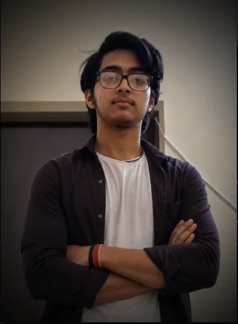

“I don't want curiosity to stay in my head. I want it to become something people can use.”
THE MAN BEHIND FUTURISTIC AI
Sparsh Saxena
Behind the screen is a story.
Behind the story is Elara.
NEET Aspirant • AI Explorer • Creator of Elara AI & OS
NEET Aspirant by choice. AI Creator by curiosity.

AI EXPLORER
ELARA / 1.0
01 / ABOUT
Curiosity took me from Python to JARVIS, and eventually to Elara.
I like building things, testing ideas, and learning by making. My path has grown around two worlds that keep challenging me in different ways: medical science and intelligent software.
16years old
BareillyUttar Pradesh
NEET preparation keeps me close to medical science. Coding gives me a place to experiment, build, and ask “what if?”
The people around me have been part of the journey, especially in the choices that led me toward PCB, medicine, and the freedom to keep exploring technology.
02 / JOURNEY
From first programs to a growing system.
A simple timeline of the ideas, experiments, and turning points that shaped Elara.
01
SCHOOL
Class 10 → Class 12
School became the base for a wider curiosity: science, chess, and the habit of learning across different interests.
02
PYTHON
The first real experiments
Python turned ideas into something visible and testable. Small programs became a way to understand how software behaves.
03
JARVIS
Learning through building
JARVIS brought voice, commands, automation, and assistant-style thinking into the same project space.
04
AI INTEGRATION
More than a command line
AI, vision, interaction, and modular software ideas started connecting into one larger system.
05
ELARA / 1.0CURRENT
Elara AI & OS
The public version of the project: a growing experiment in intelligent desktop software, interaction, automation, vision, and a longer-term OS vision.
Meet Elara ↗03 / FLAGSHIP PROJECT
ELARA AI & OS
VERSION 1.0Elara is the project where my experiments started becoming one system.
It brings together AI interaction, voice control, computer vision, automation, and modular desktop software into a single evolving idea. The public release is Version 1.0; other experimental work remains under research.
ELARA INSIGHT
Know about Elara
I think of Elara like a growing tree: each version can become a new branch, while the core idea keeps getting stronger.
04 / EDUCATION
Class 2 → Class 12
ACADEMICSFOUNDATION + CURIOSITY
Saraswati Shishu Mandir
Nainital Road, Bareilly
Saraswati Vidya Mandir
Brijlok Colony
Jainarayan Saraswati Vidya Mandir Inter College
Bareilly
School-level Chess
A small reminder that strategy was never limited to code.
05 / SKILLS
Things I build with. Things I explore.
Core skills stay clear. Experiments stay honest.
Python
My main building language for experiments, automation, desktop ideas, and Elara development.
HTML & Web
Building responsive interfaces and bringing project ideas into the browser.
AI + Vision
Experimenting with intelligent interaction, image understanding, OCR, and screen analysis.
Voice + Automation
Voice control, command systems, automation modules, and assistant-style workflows.
Desktop Systems
GUI architecture, modular software, plugins, skills, and experimental OS concepts.
Creative Technology
Turning technical ideas into interfaces, visuals, interactive modules, and useful prototypes.
06 / BEYOND THE CODE
Not everything interesting runs on a processor.
The other parts of life keep the technical side human.
01
Music
Something to reset the mind, change the mood, or disappear into for a while.
02
Medical Science
The other side of the curiosity: biology, medicine, and the long-term dream of becoming a neurosurgeon.
03
Online Gaming
Competition, strategy, chaos, and the occasional “one more match.”
04
Travelling
New places help create new perspectives — the kind you cannot get from one screen.
07 / CONTACT
Get in Touch
For projects, ideas, collaborations, or just a good conversation.
The future is still being built.
Sparsh Saxena